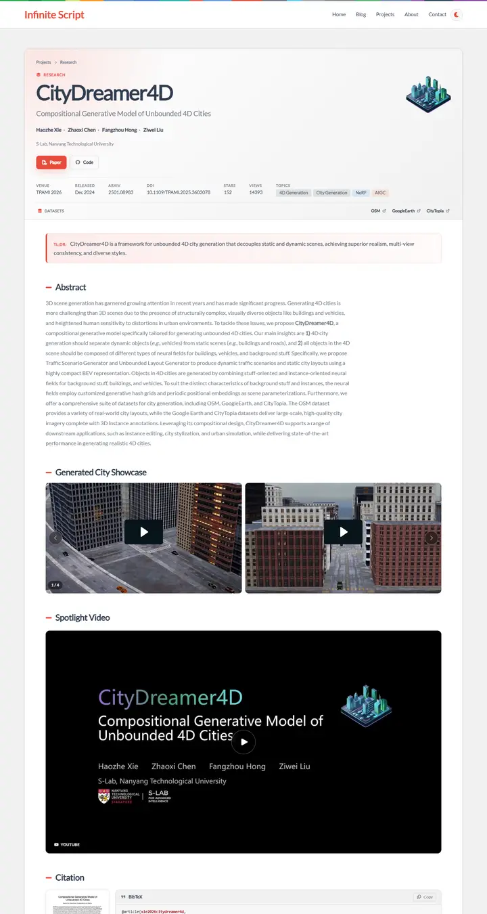
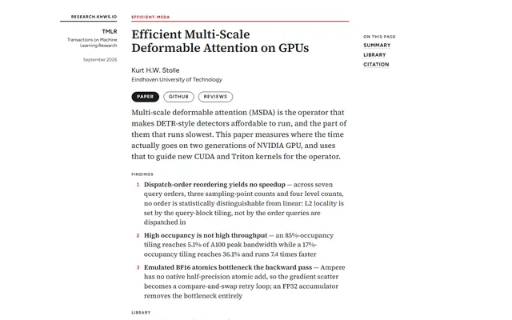
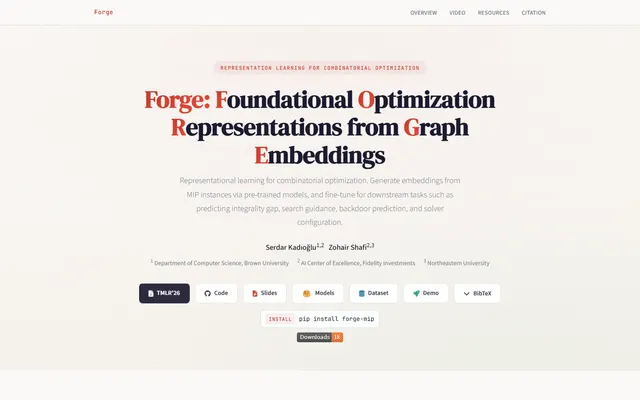
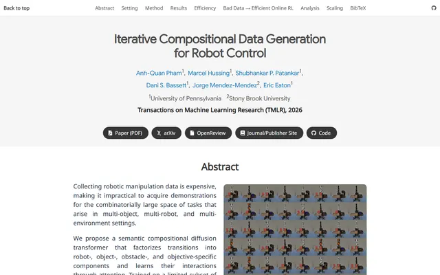
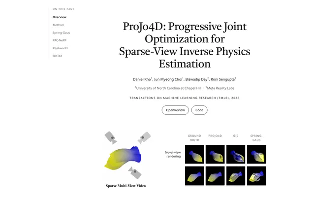
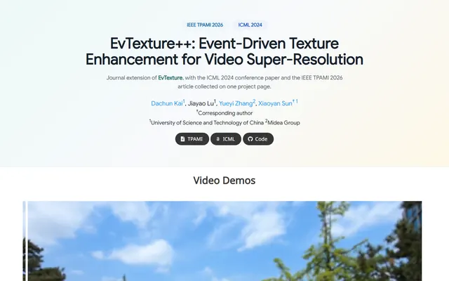
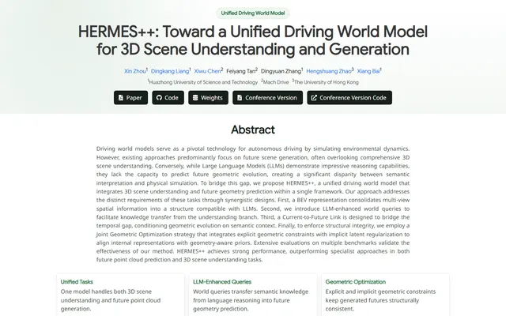

Compositional Generative Model of Unbounded 4D Cities
A research dossier filed inside a personal blog: a white card on grey, a red-lit header with a fact sheet of venue, DOI and stars, and short red dashes marking every section.

Checked against the rendered page. Only Lato 400 loads; 600-800 weights are synthesised. STARS/VIEWS values are live and change between renders. Dark theme exists via moon toggle; light documented as default.
Why it is here
Project page set inside a blog shell. The header card has breadcrumb, icon, metadata strip (venue, DOI, stars, topics) and a TL;DR callout, followed by red-dash section markers, a video carousel and a BibTeX card. Adds a dashboard-like style.
Overview
Color Palette
Typography
Lato
Compositional Generative Model of Unbounded 4D Cities
Abstract · Method · Results · BibTeX — 0123456789
Spacing & Shape
Page Modules
Guidelines
More like this

Efficient Multi-Scale Deformable Attention on GPUs
A journal offprint set by a careful compositor: serif prose in a 34em measure, italic notes in the margin, one thin red rule where the article begins.

Forge: Foundational Optimization Representations from Graph Embeddings
A warm foundry floor: cream paper, ink-navy serif, and the letters F-O-R-G-E struck in hot brick red.

Iterative Compositional Data Generation for Robot Control
A lab handbook printed on two paper stocks: grey and white bands take turns, blue-ruled callouts hold the key numbers, charcoal pills point to the paper.

ProJo4D: Progressive Joint Optimization for Sparse-View Inverse Physics Estimation
A monochrome lab notebook bound in book type: Castoro headings, hairline rules, outlined pills, and results tables set like a printed appendix.

EvTexture++: Event-Driven Texture Enhancement for Video Super-Resolution
Morning light on a lab bench: a mint-to-cream wash, two soft blue venue chips, and a row of charcoal pills before the footage starts rolling.

HERMES++: Toward a Unified Driving World Model for 3D Scene Understanding and Generation
A field station in early spring: pale sage light across a white page, forest-green labels, and charcoal buttons parked in a neat row.